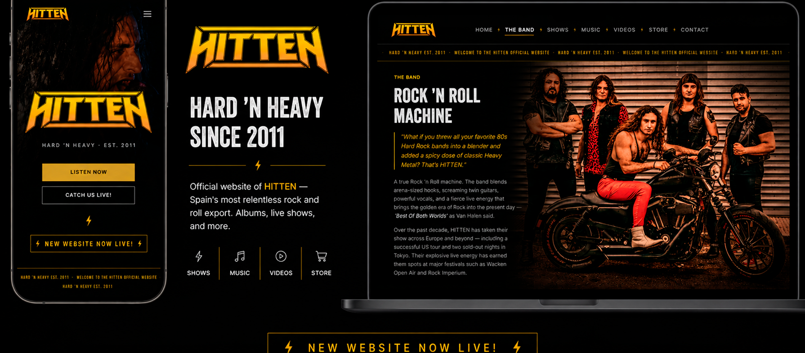
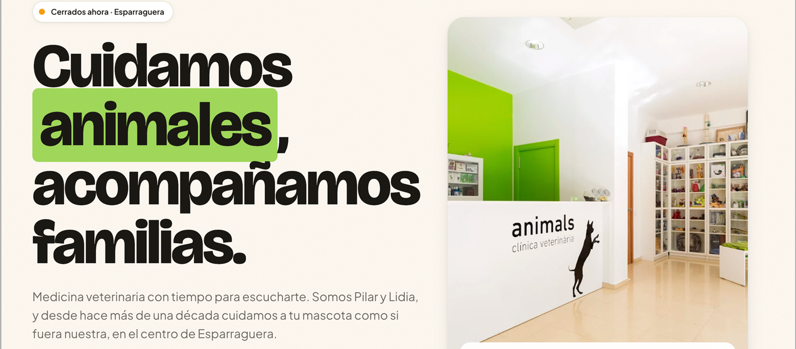

Dirección visual
Antes del código: tono, jerarquía, ritmo y una idea clara de cómo debe sentirse la interfaz.
Desarrollador frontend con criterio visual de diseñador
Construyo interfaces web responsive con HTML, CSS y JavaScript, respaldado por once años de trabajo visual para lanzamientos, imprenta y campañas digitales.
Mi base es el diseño gráfico: desde 2015 he trabajado en identidad visual, portadas, vinilos, cartelería, merchandising, reels y piezas promocionales para proyectos musicales reales.
En 2026 incorporé HTML, CSS y JavaScript para convertir ese criterio visual en interfaces funcionales. Trabajo desde la estructura, la jerarquía y el detalle para construir experiencias web claras, responsive y cuidadas.

Antes del código: tono, jerarquía, ritmo y una idea clara de cómo debe sentirse la interfaz.
HTML, CSS y JavaScript con estructura simple, responsive y fácil de mantener.
Microinteracciones, accesibilidad básica, detalle visual y despliegue sin ruido innecesario.

Sitio oficial para una banda internacional de hard rock: web principal, EPK para promotores, identidad visual, integración con Bandcamp y Bandsintown, datos estructurados y una presencia online preparada para contratación, gira y comunicación musical.

Herramienta para músicos que resuelve un problema real de directo: crear setlists con duración exacta, buscar canciones en Spotify, calcular tiempos automáticamente y exportar el resultado a Word y PDF.

Portfolio propio desarrollado sin dependencias: sistema i18n, animaciones con IntersectionObserver, doble universo visual, efectos CSS y estructura responsive pensada para contar un perfil híbrido sin perder foco frontend.

Web informativa para una clínica veterinaria con bilingüismo catalán/español, estado de apertura en tiempo real y carrusel automático de reseñas. Animaciones con IntersectionObserver, tarjetas de veterinarios con flip 3D en CSS y CTA directo a WhatsApp.

Web multi-página para una clínica de nutrición con sistema de reserva de citas funcional. Selección de servicio, fecha y franja horaria con validación en cliente, gestión de disponibilidad y confirmación de cita en tiempo real.
Puedo moverme entre diseño e implementación: traducir una intención visual a una interfaz responsive, mantener jerarquía, cuidar detalle y entregar código claro para evolucionar.
HTML semántico, CSS mantenible, estructura adaptable y componentes que respetan contenido real.
Interacciones, estados, animaciones medidas, accesibilidad básica y atención al comportamiento en móvil.
Jerarquía, composición, consistencia visual, tratamiento de marca y pulido final sin depender siempre de instrucciones cerradas.
Integraciones ligeras, SEO técnico básico, assets optimizados, GitHub y documentación clara del trabajo.
La parte visual de mi perfil: criterio, producción y dirección de arte aplicados a proyectos reales.
Antes de escribir interfaces, aprendí a resolver problemas visuales en soportes reales: identidad, composición, producción, legibilidad, adaptación y detalle final. Esa base es la que llevo al frontend cuando traduzco una intención visual a código.
Esta selección no intenta ser el portfolio gráfico completo: funciona como prueba del perfil híbrido. Muestra cómo pienso sistemas visuales, adapto una pieza a distintos soportes y cuido el resultado hasta producción.

Caso principal de la sección: una lámina completa que muestra el proceso aplicado a este tipo de lanzamientos, desde la adaptación visual de la portada hasta las piezas interiores, especificaciones de imprenta y mockup final.
© High Roller Records
Análisis de adaptación gráfica desde el artwork original hacia dos soportes textiles: raglan 3/4 y camiseta negra básica. El estudio conserva composición, jerarquía, iconografía y lenguaje visual de la pieza madre, optimizando la lectura en impresión mediante reducción tonal, reencuadre, protagonismo del logotipo, control tipográfico y pruebas de acabado sobre prenda.

Estudio de producción para roll-up de 850 x 2000 mm, desde el arte final hasta la pieza instalada. La lámina documenta adaptación a escala, legibilidad a distancia, jerarquía tipográfica, preparación de archivo maestro en InDesign, modo CMYK, perfil Coated FOGRA39, resolución efectiva, sangrados, separación de tintas y exportación PDF/X-1a:2001 para imprenta.

Relectura del logotipo original sin suavizar su carácter: se mantienen las puntas, la tensión horizontal y el peso de banda clásica, pero se reconstruyen los planos con biseles cromados, reflejos cyan y cortes ámbar. El estudio baja el logo a aplicaciones reales —pin metálico, backdrop negro y camiseta vintage— para comprobar contraste, escala y presencia antes de cerrar la versión final.
Diseñador de base. Frontend developer con foco en interfaces visuales.
Murcia / Barcelona · Remoto / híbrido · Disponibilidad inmediata
↑ Volver arriba